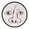

HISTORY

Biographies Timeline Newspaper articles Dumile Feni Exhibitions
1965: Transvaal Academy, Johannesburg
1966: Gallery 101, Johannesburg (solo)
SA Breweries Art Prize Exhibition, SA – tour
Republic Festival Exhibition, Pretoria
Durban Art Gallery (solo)
Pretoria Art Museum
Johannesburg Civic Theatre
Adler Fielding Galleries, Johannesburg (Artists of Fame and Promise)
Trans-Natal, Natal Society for Arts, Durban
1967: Transvaal Academy, Johannesburg (solo)
Sao Paulo Biennale, Brazil
Gallery 101, Johannesburg (solo)
Adler Fielding Galleries, Johannesburg (Sculpture SA, 1900 – 1967)
1968: Goodman Gallery (Sketches from a Private Collection) (solo)
1969: Camden Arts Centre, London (Contemporary African Art)
Grosvenor Gallery, London
1970: Goodman Gallery (The 51 Club Winter Art Exhibition)
Goodman Gallery (Exhibition from the Collection of Desmond Fisher)
1971: Gallery 101 (group)
1972: Gallery 101 (group)
1975: Goodman Gallery (SA Sculpture)
Gallery 21, London (African Art from SA)
1977: Gallery 21, SANG (Cape Town Festival)
Rand Afrikaans University, Pretoria Art Museum, University of Orange Free State, William Hamphrey Art Gallery (University of Fort Hare – Contemporary African Art in SA)
1981: Jabulani Standard Bank, Soweto (Black Art Today)
1982: National Museum and Art Gallery, Gaborone, Botswana (Art towards Social
Development: an Exhibition of SA Art)
1983: United Nations Exhibition, Commemoration of Namibia Freedom day, New
York City
1987: Unlock Apartheid’s Jails, conference on children under apartheid, with Bill
Cosby and the American Committee of Africa, Hyatt Hotel, New York City
1988: La Galleria, New York (solo)
City without Wall Gallery, Newark, New Jersey (Uhuru: an Exhibition of African American Art against Apartheid)
Voices from Exile (Seven SA Artists), Washington DC, Los Angeles,
Houston, Philadelphia
1989: Portrait of Nelson Mandela for the Pathfinder Mural, New York City
1990: Applecrest, New York (Township Art from SA)
1991: Standard Bank National Arts Festival, GrahamstownAwards
1966: SA Breweries Art Competition
1971: African Studies Centre, University of California Los Angeles Art Competition
1972: Winner, U.T.A pavement Competition
1973: 1st Prize for Drawing at the Sao Paulo BiennaleCommissions
1964: Composition study of Albert Luthuli as the recipient of the Nobel Peace Prize
1978: Mural for the University of California, Los Angeles
Triptych of drawings for the American Committee on Africa’s Unlock Apartheid Jails campaign
1981: Sculpture of Louis Armstrong
Liz Caybourne Foundation
Art OrtenburgStudy
1959 – 63: Artists Cooperative Workshop
Apprenticeships at Art Foundry of Block and Leo Wald, Sculpture, Pottery and Plastics
1967 - Transvaal Art Academy
1986 - Visiting Artist, University of Massachusetts
1980 – 83: New York University, Graduate Programme in Film and TelevisionCollections
Institutions
1. Johannesburg Art Gallery
2. South African National Gallery
3. Durban Art Gallery
4. Pretoria Art Museum
5. Standard Bank Art Gallery
6. Bryant Art Gallery
7. Museum of Modern Art
8. Dumile Feni Family Trust
9. Constitutional Court of South Africa
10. University of Fort Hare
11. Mayibuye CentreISSUED BY: THOMAS MOLETE COMMUNICATIONS (PTY) LTD
ZENG MSIMANG
TELEPHONE: [number removed] FAX [number removed]
DATE:
ON BEHALF OF: Johannesburg Art Gallery
Clive Kellner
TELEPHONE: [number removed] FAX [number removed]About The Trust
The Dumile Family Trust aims to establish a forum to collect protect and promote the artworks and cultural legacy of Dumile Feni.The Dumile Feni Foundation is an NGO that seeks to uphold the objectives of he Dumile Family Trust. The Foundation also aims to promote Dumile name and advise and consult with the Trust. Lastly the Foundation is tasked with assisting in the promotion of art and culture,and the upliftment of South African artists.
The foundation Members are Carol Steinberg, Clifford Charles, Judge Alby Sachs, Moeletsi Mbeki (Chairperson), Prince Dube, Omar Badsha, Barbara Masekela and Marriam Diale.